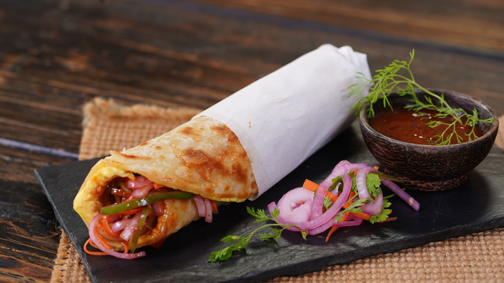

Egg Roll

Description
Kolkata-style egg roll is a beloved street food made with a flaky, golden paratha wrapped
around a layer of egg, filled with sliced onions, cucumber, green chillies, and a squeeze of
tangy lemon juice. Finished with a dash of chaat masala and chilli sauce, this delicious,
handheld snack delivers the perfect balance of spicy, tangy, and savoury flavours.
Ingredients
- For Dough
- 1 cup Refined flour
- 1 heaped tsp Powdered sugar
- ¼ tsp Salt
- 1 tsp Ghee
- Water as required
- 1 tsp Oil
- For Fresh Salad
- 2 medium size Onion, sliced
- 2 fresh Green chilli, chopped
- Salt to taste
- 1 tsp Lemon juice
- 1 small Carrot, julienned
- ½ Capsicum, julienned
- 2 tsp Vinegar beetroot juice
- For Sauce
- ⅓ cup Tomato ketchup
- 2 tbsp Red chilli sauce
- 1 tsp Chaat masala
- ½ tsp Black pepper powder
- 1 heaped tsp Powdered sugar
- For Egg
- 2 whole Egg
- A pinch of salt
- ¼ tsp Green chilli sauce
Steps
- In a large bowl, add refined flour, powdered sugar, salt, and ghee.
- Add water as required and knead a soft dough.
- Now, apply little oil and cover it with a muslin cloth and rest for 15-20 minutes.
- In a mixing bowl, add sliced onion, green chilli, salt to taste.
- Add lemon juice, carrot, capsicum, vinegar and beetroot juice.
- Now, mix everything well and keep it aside for future use.
- In a bowl, add tomato ketchup, red chilli sauce, chaat masala, black pepper powder.
- Add powdered sugar and mix it well.
- Keep it aside for future use.
-
Divide the well-rested dough into 3 portions and shape each portion into a small dough ball.
- Roll the dough into a very thin sheet, almost transparent.
-
Starting from one edge, make small pleats by folding the rolled dough. Then, swirl the pleat
to form a circle like a Swiss roll. Make sure to tuck in the end neatly.
-
Shape the rest of the dough balls the same way. Cover and let it rest for 5 to 10 minutes
before you roll it for the paratha.
- Place a cast iron pan or any heavy-bottom skillet at medium heat.
- Roll the shaped dough into a thin circle evenly. Roll gently from the center outward.
- Drizzle a little oil onto the medium-hot skillet and place the rolled paratha.
-
Gently press and keep rotating the paratha on the skillet. Cook for 1 minute, drizzle a
little oil on top and flip.
-
Cook for one minute while gently pressing. Make sure to press the edges as that part takes
more time to cook. Flip and cook for a minute. Continue flipping and cooking until you see
golden brown spots all over. Take it off the skillet.
-
Whisk one egg in a bowl with a tiny pinch of salt and green chilli sauce. Drizzle a little
oil on the skillet, pour the egg and immediately place the cooked paratha on top of the egg.
Gently move it around so that the bottom gets covered in the egg. Cook for a few seconds and
carefully flip it around.
- Layer the fresh onion salad in the center of the paratha.
- Add the prepared sauce and roll the paratha tightly.
- Wrap it with parchment paper. Make sure to seal the bottom.
- Serve immediately.
Home